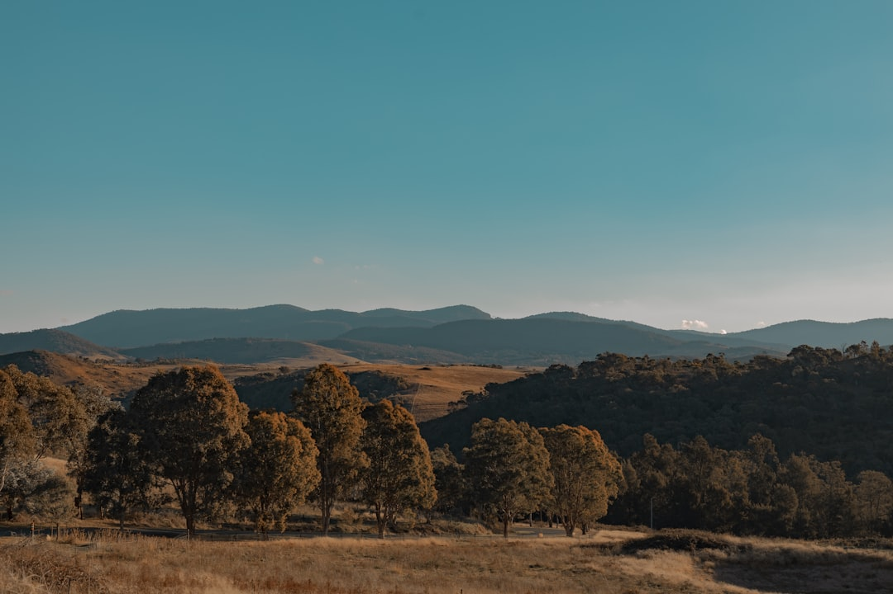

For Canberra tree work, removal is only one route. The source guide names six routes: removal, pruning, stump work, arborist assessment, urgent tree work and hedge maintenance. It also says all public trees are protected, and private trees may be protected under the Urban Forest Act 2023. There is no reliable price from height alone, so the useful first step is a written scope covering status, access, nearby assets, stump work and waste.
For homeowners comparing tree removal canberra options, the practical question is whether the tree should be removed, pruned, assessed first, or scoped for stump and waste work.
Tree Removal Canberra Explained
Top Tree Removal Canberra frames the job as a decision process before any cutting is arranged. That is useful in the ACT because the same tree enquiry can lead to removal, pruning, deadwooding, assessment, storm-damage triage, stump grinding or repeat hedge maintenance. The first question is ownership and status, then the practical question is what work is actually needed.
The published guide says all public trees are protected, and that residents must not prune or remove street trees themselves. For private land, it points readers to current City Services guidance and ACTmapi before arranging major work, because a private tree may be protected under ACT rules. A dead native tree can still need care in the status check, so condition alone should not be treated as permission.
For another crawlable editorial path on the same topic, see this Canberra tree work planning guide.
When Removal Is Only One Possible Route
Removal may fit a dead, structurally compromised or unsuitable tree, but the source page is careful not to make removal the automatic answer. Selective pruning may suit deadwood, clearance or canopy objectives. An arborist assessment may be the better starting point where health, risk, protected-tree or development questions are unresolved. Stump grinding becomes its own scope item when the remaining stump, surface roots, grindings and backfill affect how the area will be reused.
A clear enquiry should separate the desired outcome from the method. Saying that a branch is over a roof, a canopy needs clearance, or a stump area will be paved gives a provider a better basis for written advice than simply asking for a price. The source also distinguishes storm-damage triage from planned work, especially where fallen material, visible lines or make-safe work may change the immediate response.
- Use pruning language when the goal is deadwood removal, clearance or canopy management.
- Use assessment language when protected status, health, risk or development impact is uncertain.
- Use stump language when grinding depth, grindings, backfill or reuse of the area matters.
- Use urgent tree-work language when fallen or storm-damaged material needs triage.
The Site Details That Change A Written Scope
The source page says there is no reliable price from height alone. That is the main quote lesson. A useful written response needs the whole tree, trunk, access path, nearby roofs, fences and services, plus the suburb and the reason the work is being considered. Gate width, slope and the route from the tree to the work area can matter because the practical method may change when access is constrained.
Photos should show the tree in context, not only a close-up of the trunk. A whole-tree image helps show canopy spread and nearby structures. A trunk image helps identify size and base conditions. Access photos help clarify whether equipment and waste movement are straightforward. If visible lines, roofs, fences or services are close to the work zone, they belong in the initial enquiry rather than being discovered after a quote is issued.
The same approach applies to waste and finish. Ask whether logs, mulch, stump grindings and final clean-up are included or excluded. Ask whether site repair is part of the scope. Written inclusions make quote comparison less dependent on assumptions.
Who This Applies To
This guide is for ACT property owners or occupiers trying to prepare a responsible enquiry before choosing a provider. It is also useful for people comparing pruning with removal, deciding whether a stump should be ground, or asking whether an assessment is needed before major work. It does not replace the status checks or written confirmation from the actual operator.
It is especially relevant where the tree may be on public land, near a boundary, close to roofs or fences, affected by storm damage, or subject to ACT protected-tree rules. In those situations, the enquiry should record what has already been checked and what remains uncertain.
- Confirm whether the tree is private or public before arranging work.
- Check protected status using the current ACT pathway named by the source guide.
- Keep people clear of an unsafe area and treat overhead or fallen electrical lines as a separate hazard.
- Ask the provider to put method, approvals, credentials, insurance, inclusions and exclusions in writing.
Comparing Providers Without Guesswork
The source page says provider proof stays provider-level. That means this editorial guide should not borrow an unnamed operator's licence, insurance, memberships or project history. Those checks belong to the actual contractor who may inspect, quote or carry out the work. Ask for the details that attach to that provider, not to a directory page or general article.
For tree removal canberra enquiries, the cleanest comparison is a written scope that uses the same facts for each provider. Give each provider the same photos, access notes, ownership status, protected-status result, stump preference and waste expectation. Then compare method, approvals, credentials, insurance, inclusions, exclusions and site repair in writing.
Availability and acceptance should also be confirmed by the actual provider. The source page states that submitting the form does not confirm provider availability, timing or acceptance of the work. Treat the first response as a way to clarify the job, not as proof that the work can proceed.
- Identify ownership. Work out whether the tree is on private land or public land before arranging pruning or removal.
- Check protected status. Use the current ACT checks named by the source guide before authorising major work.
- Document the site. Send whole-tree, trunk, access and nearby-asset details so the written response is based on the real constraints.
- Separate inclusions. State whether stump work, logs, mulch, grindings, backfill and clean-up should be included.
- Compare written scopes. Ask each provider to confirm method, approvals, credentials, insurance, exclusions and site repair in writing.
| Situation | Possible route | Question to ask |
|---|---|---|
| Dead or unsuitable tree | Removal planning | Has ownership and protected status been checked before major work? |
| Deadwood or clearance objective | Selective pruning | Is pruning enough to meet the canopy or clearance goal? |
| Unclear health, risk or development issue | Arborist assessment | Should an assessment happen before choosing the work method? |
| Stump affects reuse of area | Stump grinding | Are grinding depth, grindings and backfill included? |
| Fallen or storm-damaged material | Urgent tree-work triage | Are visible lines, access and make-safe scope clearly described? |
Common questions
Can a Canberra tree be priced from height alone? No. The source guide says there is no reliable price from height alone. Canopy, trunk, access, nearby assets, stump work, waste and exclusions all need to be scoped.
Are public trees treated differently in the ACT? Yes. The source guide says all public trees are protected and residents must not prune or remove street trees themselves.
Does a dead private tree always avoid protected-tree checks? No. The source guide says a dead native tree can still require care in the status check, so status should be checked before major work.
What should be included in a first enquiry? Include the suburb, reason for the work, whole-tree and trunk photos, access route, nearby roofs, fences, visible lines, slope and the intended result.
This guide covers ACT tree-work planning, status checks, written scope inputs and quote-comparison questions for Canberra properties.